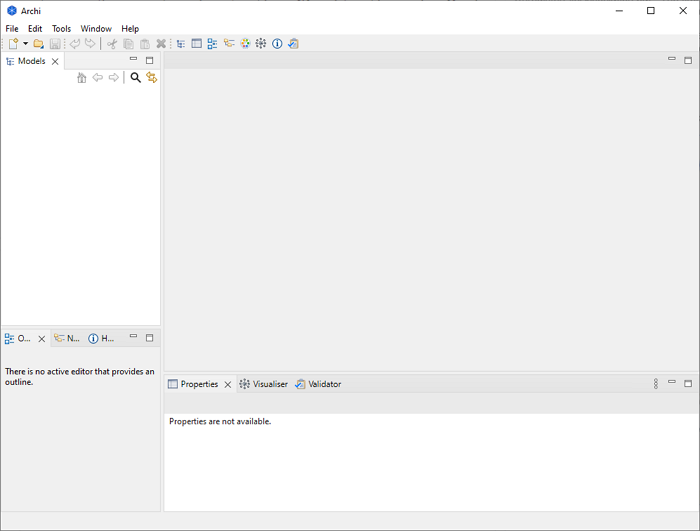
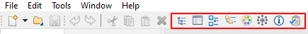

从以下位置下载所需版本： https://www.archimatetool.com
Windows 版本具有安装程序。运行安装程序将Archi安装到您的系统。支持 Windows 10和 11 64位。安装程序只需将程序文件复制到目标目录 ，并将 * .archimate文件与 Archi关联。还提供了卸载程序。
您也可以使用ZIP安装手动安装Archi。解压缩此文件并运行“Archi”或程序文件。还包括一些Windows批处理文件- “RegisterFileAssociation.bat”和“UnregisterFileAssociation.bat”。这些文件中的第一个将注册*。在Windows注册表中使用Archi存档文件扩展名。第二个批处理文件将注销文件关联。
Mac 和Linux版本分别打包在 dmg和 tgz文件中。只需复制 dmg或 tgz下载中的文件 ，然后双击 “Archi”应用程序文件即可启动程序。
新的空白ARCHI工作区如下所示 ：

默认Archi工作区
工作区分为以下子窗口：
可以通过将这些子窗口拖动到新位置或将其拖出主应用程序窗口以与主窗口分离来重新排列这些子窗口。
通过从主菜单栏上的“窗口”菜单或工具栏上的按钮中选择适当的菜单项，可以显示或隐藏各种窗口：

Windows工具栏
要将Archi窗口工作区重置为其默认布局 ，请选择 "重置窗口布局"从主菜单的“窗口”菜单。
您可以通过从主菜单的“窗口”菜单中选择“隐藏/显示工具栏”来隐藏或显示主工具栏。